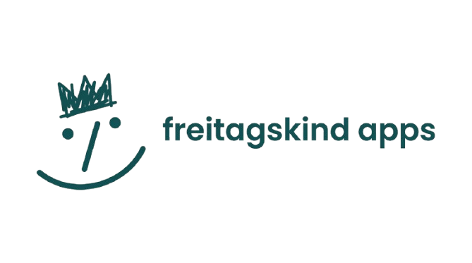

01Project
Pendula
Moments, counted.
A countdown widget app that keeps your important moments visible and motivating. From birthdays and trips to personal goals — stay connected to what matters.
View project →

Code as experience,
not just function.
Moments, counted.
A countdown widget app that keeps your important moments visible and motivating. From birthdays and trips to personal goals — stay connected to what matters.
View project →Focused. Intentional.
We build small apps with real impact. Problem-first thinking, simple by design, made to last — every pixel earns its place.
View approach →Independent by design.
freitagskind apps is an independent studio crafting digital experiences that inspire and empower. Self-funded, human-centered, no dark patterns — ever.
Get in touch →